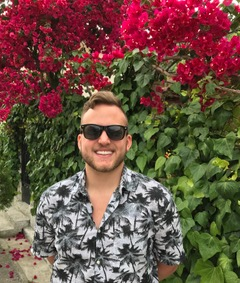

About Me
After graduating with my Bachelors of Sciences and Arts in Human development from the University of Texas at Austin, I worked in the amazing world of wine for a year as a fine wine specialist at a San Antonio fine wine and spirits retailer.
Through family I developed an interest in computers, web development and coding. I am now currently enrolled in the UT Austin Full Stack Web Development Coding Boot Camp! I will be starting an internship with Beckwith Electronic Engineering and hope to continue learning and progressing in the field.